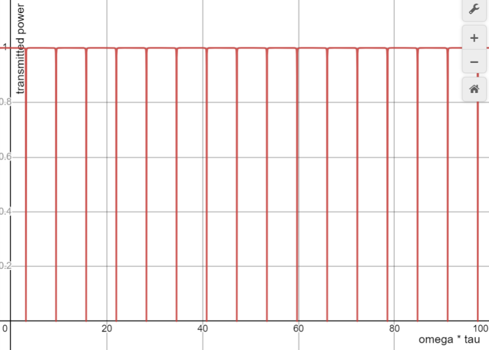
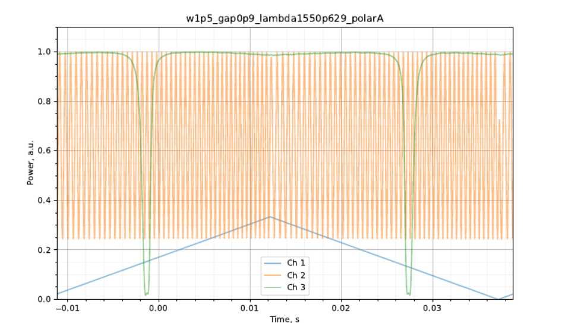
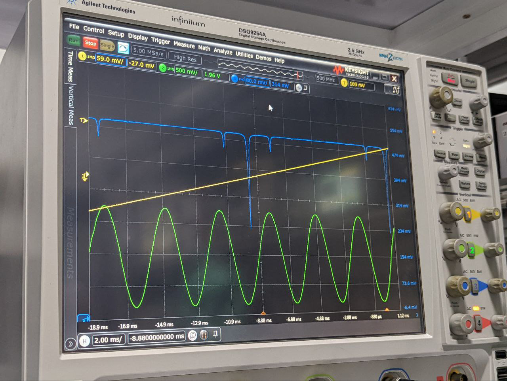
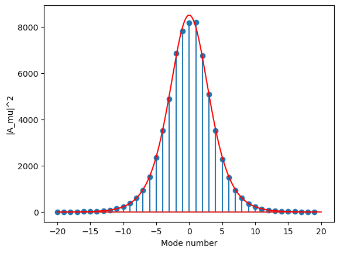

A1. 광섬유에서 멀리 떨어진 곳에서 장이 무한대로 커질 수 없으므로 두 계수는 0이다.
A2. 해의 꼴을 파동 방정식에 대입하면
$$\frac{\partial^2A}{\partial x^2} + \frac{\partial^2A}{\partial y^2} + \left(\frac{\omega^2\varepsilon}{c^2} - \beta^2\right)A = 0.$$$\partial^2A/\partial y^2 \ll \partial^2A/\partial x^2$이고 광섬유 바깥에서는 $\varepsilon = 1$임을 고려하면 다음을 얻는다.
A3. 꼭짓점이 $(a/2 - \delta a, y, z)$, $(a/2 - \delta a, y, z + \Delta z)$, $(a/2 + \delta a, y, z + \Delta z)$, $(a/2 + \delta a, y, z)$인 직사각형 회로에 대해 패러데이 전자기 유도 법칙을 쓸 수 있다. $\delta a \to 0$이면 자기 다발의 시간 미분은 0으로 가지만 전기장 세기의 순환은 같은 꼴을 유지하므로, 순환 또한 0이다. $\delta a \to 0$에서 순환은 $\Gamma = (E_{\tau 1} - E_{\tau 2})\Delta z = 0$으로 쓸 수 있으므로
A4.
A5. 증명은 A3와 같으나, 전자기 유도 법칙 대신 자기장 세기에 대한 순환 정리를 쓴다.
A6. 미분 꼴의 패러데이 법칙으로부터
$$-\mu_0\frac{\partial H_z}{\partial t} = \frac{\partial E_y}{\partial x}.$$$H_z$의 시간 미분은 다음과 같이 쓸 수 있다.
$$\frac{\partial H_z}{\partial t} = i\omega H_z,$$따라서
A7. $H_z$를 구하기 위해 $A$를 $x$로 미분하자.
$$\frac{\partial A}{\partial x} = -k_{in}\sin(k_{in}x),\quad |x| < a/2;\qquad \frac{\partial A}{\partial x} = -k_{out}\exp\bigl(-k_{out}(x - a/2)\bigr)\cos(k_{in}a/2),\quad x > a/2.$$계면 양쪽의 $H_z$를 같게 놓으면
A8.
B1.
B2.
B3. $\varphi = -\omega\tau$로 두자. 그러면
$$B_{out}(t) = it_sA_{in}(t) - r_sB_{in}(t),\qquad B_{in}(t) = \kappa e^{i\varphi}B_{out}(t),$$B4. 앞 문항의 $B_{out}(t)$를 대입하면
$$B_{in}(t) = \kappa e^{i\varphi}\bigl(it_sA_{in}(t) - r_sB_{in}(t)\bigr),\qquad B_{in}(t) = \frac{it_s\kappa e^{i\varphi}A_{in}(t)}{1 + r_s\kappa e^{i\varphi}},$$B5. $P_2$로 나가는 파동은
$$A_{out}(t) = -r_sA_{in}(t) + it_sB_{in}(t) = -A_{in}(t)\left(r_s + \frac{t_s^2\kappa e^{i\varphi}}{1 + r_s\kappa e^{i\varphi}}\right).$$괄호 안의 식을 통분한 뒤, 분자의 절댓값의 제곱을 분모의 절댓값의 제곱으로 나누면
B6.

B7. 출력 비의 식을 테일러 급수로 전개하여 흡수 봉우리의 깊이를 구하자.
$$\eta(\omega_{res}) \approx \frac{(1 - \kappa - t_s^2/2)^2}{(1 - \kappa + t_s^2/2)^2} \approx 0,\qquad \Delta\eta_{max} = 1 - \eta(\omega_{res}) \approx 1.$$또는 전개하지 않고 앞 문항의 $\varphi$ 값을 대입해도 $\eta(\omega_{res}) \approx 1.6\cdot 10^{-6} \approx 0$, $\Delta\eta_{max} \approx 1$이다.
첨예도는 $\omega$와, $\Delta\eta > \Delta\eta_{max}/2$인 영역의 너비의 비이다. 이 영역의 너비를 추정하자.
$$\varphi = \delta + \pi(1 + 2n),\qquad \delta \ll \pi$$로 두고 $\delta$에 대한 매클로린 급수로 전개하면
$$\eta \approx \frac{\delta^2 + (1 - \kappa - t_s^2/2 + \delta^2/2)^2}{\delta^2 + (1 - \kappa + t_s^2/2 + \delta^2/2)^2} \approx \frac{\delta^2}{\delta^2 + (1 - \kappa + t_s^2/2)^2} = \frac{1}{2}.$$이로부터
$$\delta \approx 1 - \kappa + t_s^2/2 \approx 0.01,$$C1.

C2. EOM 출구에서 장의 진폭은
$$E_{EOM}(t) = f(t)\cos(\omega(t)t) = \beta\cos(\omega t) + \frac{1 - \beta}{2}\Bigl(\cos(\Omega + \omega)t + \cos(-\Omega + \omega)t\Bigr),$$여기서 $\omega = \omega(t) = \omega_0 + \alpha t$이다. 이 경우 FR에는 서로 정확히 $\Omega$만큼 진동수가 어긋난 세 파동이 입사한다. 따라서 흡수 봉우리의 수는 세 배가 된다. 흡수 봉우리는 진동수 $\omega_{res}$, $\omega_{res} + \Omega$, $\omega_{res} - \Omega$에서 관찰되며, $\omega_{res}$는 투과가 최소가 되는 진동수(B6에서 정의)이다.

C3. 흡수 극대들이 서로 $\omega_{MZI}$만큼 떨어지도록 $\Omega$를 바꾸어 한 주기를 측정할 수 있다. 그러면 절대 오차는 $\omega_0/Q = 24~\mathrm{MHz}$ 정도이고, 상대 오차는
D1.
D2. 도함수를 계산하여 방정식에 대입하자($iF_0\exp(i\sigma z)$로 나눈다).
$$\frac{\sigma}{\cosh\theta s} + \frac{\beta_2\theta^2}{2\beta_1^2}\left(-\frac{2}{\cosh^3\theta s} + \frac{1}{\cosh\theta s}\right) = \frac{\gamma F_0^2}{\cosh^3\theta s}.$$이로부터
D3. B3의 결과를 이용하면 고유 진동수 조건은
$$\beta(\omega_\mu)L + \pi = 2\pi(\mu + \mu_0).$$이제 $\beta(\omega)$의 식에 $\omega_\mu$를 대입하면
$$\left(\beta_0 + \beta_1\left(D_1\mu + \frac{D_2\mu^2}{2}\right) + \frac{\beta_2D_1^2\mu^2}{2}\right)L \approx 2\pi(\mu + \mu_0 + \mathrm{const}).$$양변의 $\mu$와 $\mu^2$의 계수를 비교하면
D4. $F_0^2 > 0$이므로($\gamma$는 $\chi > 0$과 부호가 같다) $\beta_2 < 0$이고, 따라서
D5. 스펙트럼은 그림과 같이 FR의 고유 진동수에 놓인 좁은 선들로 이루어진다. 포락선은 $F_1/\cosh^2\bigl(F_2(\omega - \omega_0)\bigr)$로 맞출 수 있지만($F_1$, $F_2$는 $F_0, \sigma, \theta$에 의존하는 상수), 포락선의 해석적 표현은 요구되지 않는다.

D6. 눈금 간격이 $D_1$인 자를 얻은 셈이므로, 절대 오차는 그 간격의 절반 정도이다.
D7.